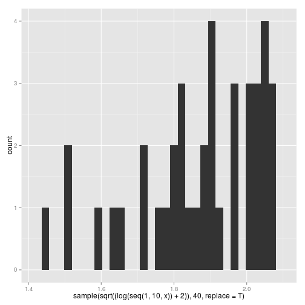

-
Exercícios
SourceAula 01
R como calculadora
Calcule o número de ouro no R (\(\frac{1 + \sqrt{5}}{2}\)).
O que dá divisão de 1 por 0? E -1 por 0?
Quais as diferenças entre
NaN,NULL,NAeInf?
4.a) Tente mentalmente calcular o que dá a conta
5 + 3 * 10 %/% 3 == 15no R, sem rodar.4.b) Adicionando apenas parênteses, faça a expressão acima retornar o resultado contrário.
Flow Controls
1.a) O que acontece se eu rodar
x <- 4 if(x = 4) { 'isso aqui apareceu' } x require(abjutils) data(pnud_muni, package='abjutils') require(dplyr) dados2010 <- pnud_muni[ pnud_muni$ano==2010, c('uf', 'ufn')] dados2010$uf2 <- paste(dados2010$uf, dados2010$ufn) unique(dados2010$uf2)Você notou alguma coisa estranha? Como o R se comporta nesse caso?
1.b) Como você modificaria esse código para não dar erro e aparecer a frase 'isso aqui apareceu'? Obs: Existem duas formas de modificar o código que farão ele funcionar.
- Escreva a frase (em uma linha)
1 elefante(s) incomoda(m) muita gente
2 elefante(s) incomoda(m) incomoda(m) muito mais
3 elefante(s) incomoda(m) muita gente
4 elefante(s) incomoda(m) incomoda(m) incomoda(m) incomoda(m) muito maisusando
forouwhile.Funções
Crie uma funçao que recebe um vetor de numeros e devolve a variancia.
Calcule a variancia de
x <- 1:100utilizando a sua funcao criada no item 1 e utilizando a funcaovar()do R. Compare seus resultados. Eles coincidem? Por que?Altere sua funcao para que agora ela aceite que o usuario escolha entre qual tipo de variancia ela quer calcular. Certifique-se que ela devolva
Construa uma funcao que recebe dois vetores numericos de mesmo tamanho,
v1ev2, e retorne a media ponderada dev1porv2. Calcule a média ponderada do vetorv1 <- c(11, 9, 8, 7, 11, 6, 7, 9)utilizando como pesos o vetorv2 <- c(1, 2, 1, 2, 1, 2, 1, 2). BONUS: certifique que o usuario tenha passado vetores de tamanhos iguais e ambos numericos. RetorneNULLcaso uma dessas condicoes falhe.Crie uma versao da funcao
paste()que una palavras pulando linhas (\\n)Crie uma função que recebe um vetor de characters e um vetor numérico de mesmo comprimento e imprima um texto com os nomes dessas variáveis, um símbolo de atribuição (
<-), e os números, separando cada expressão pulando linhas. Por exemplo:
x <- letters[1:10] y <- 10:1 imprime_coisas_legais(x, y)a <- 10 b <- 9 c <- 8 d <- 7 e <- 6 f <- 5 g <- 4 h <- 3 i <- 2 j <- 1Aula 02
Estruturas de dados
1. O senhor Adalberto é dono de uma loja e, utilizando o R, ele quer criar um cadastro de seus clientes. Para isso, ele está armazenando as informações em uma matriz da seguinte maneira:
cadastro <- matrix(c(NA, NA, NA, NA), nrow = 100, ncol = 4, dimnames = list(NULL, c("Nome", "Idade", "Cidade", "Telefone"))) cadastro[1,] <- c("Maria das Dores", 56, 3025-111, "São Paulo") cadastro[2,] <- c("José Aníbal", 40, 3333-012, "Santos") cadastro[3,] <- c("Pedro Silva", 23, 3091-777, "São Paulo") # ...a) O que faz o argumento
dimnames =? O que significa o primeiro argumento da lista serNULL?b) O que vai acontecer se o senhor Adalberto tentar tirar a média da idade dos seus clientes fazendo
mean(cadastro[,2])? Como ele poderia calcular essa média sem mudar a estrutura do objetocadastro?c) No lugar de
matrix, qual seria a melhor estrutura para se utilizar neste caso?2. Por que
0.1 == 0.3/3retornaFALSE?Subsetting
1. Considere o
data.framediamonds do R:a) Como você faria para permutar aleatoriamente as colunas?
b) É possível permutar linhas e colunas simultaneamente em um passo?
c) Como ordenar as colunas do banco de dados em ordem alfabética?
d) Crie uma nova variável no banco de dados que seja 1 se o preço (
price) for menor 300 e 0 caso contrário.2. Considere o vetor abaixo:
x1 <- 1:8a) Por que a expressao
x1 == c(2,3)não retorna as posições dex1que são iguais a 2 ou 3?b) O que faz o operador
%in%?Leitura de dados
- Vamos supor que o seu diretório de trabalho seja
"Desktop/pasta1/pasta2"e que dentro da pasta2 você tenha uma pasta3. Sem mudar o diretório de trabalho, escreva um código, utilizando a funçãoread.table(), para ler um arquivo que esteja
a) dentro da pasta3. b) dentro da pasta1.
É possível ler um arquivo em que o separador de valores (
sep) é igual ao separador de casas deciamais (dec)?Qual a diferença entre as funções
read.csv()eread.csv2()?
O operador pipe
- Reescreva a expressão abaixo utilizando o operador
%>%.
x <- 0.1 library(ggplot2) qplot(x=sample(sqrt((log(seq(1, 10, x)) + 2)), 40, replace = T), geom="histogram")## stat_bin: binwidth defaulted to range/30. Use 'binwidth = x' to adjust this.## Warning: position_stack requires constant width: output may be incorrect
- Para que servem os operadores:
a)
%<>%? b)%T>%? c)%$%?Gráficos com o pacote graphics
1. Considere o gráfico abaixo:
x <- seq(-3, 3, 0.01) y <- 1/x plot(x, y, type = "l")a) Altere os limites do eixo x para que o gráfico seja visualizado apenas do -2 ao 2.
b) Acrescente um título ao grafico.
C) Acrescente uma reta vertical pontilhada no ponto x = 0.
d) Acrescente uma legenda ao gráfico no "terceiro quadrante".
2. Como construir dois gráficos na mesma janela?
Aula 04
A base de dados
bd_dyad_sample(leia executandodata(bd_dyad_sample, package='abjutils')) contém em cada linha uma coalizão ocorrida ou não na Organização Mundial do Comércio, entre dois países. Os países estão identificados pelas colunasccode1eccode2. A coalizão é identificada pela variávelFreqou a variávelcoalition, que são iguais e valem1se houve coalizão e0caso contrário. A colunaccoalitioné um identificador de qual foi a coalizão que aconteceu (Mercosul, acordos da Europa, etc).As outras medidas da base são basicamente medidas de distância entre caracteísticas dos países em relação a um dado ano. Por exemplo,
pwt_lrgdpmede a diferença (em log) dos PIBs dos países, edist_latlonmede a distância dos países.Tidy data
1. Qual é a unidade observacional (o que identifica uma observação)?
select, filter, mutate, arrange, summarise, gather, spread
2. Qual é o código do país que entrou mais vezes em alguma coalizão?
3. Qual é o código do país que entrou em coalizão com mais países?
4. Quantas coalizões tivemos em cada ano?
5. Construa uma matriz de adjacências usando
dplyr. Queremos umdata.framecom número de linhas igual ao número de colunas, e o conteúdo da tabela é1se o país da linha entra em coalizão com o país da coluna em dado ano e dada coalizão, e0caso contrário.Aula 05
ggplot2
1 Como adicionar um título a um gráfico?
2 Como alterar a posição da legenda de um gráfico? Como removê-la?
3 Como personalizar os eixos de um gráfico?
Dica: consulte esse site/).
Para fazer os exercícios abaixo, utilize o banco de dados
moviesdo pacoteggplot2.4 Faça um gráfico de barras mostrando o número de filmes por ano de 1990 para cá.
5 Faça boxplots da classificação (rating) para cada classificação da MPAA. Adicione ao gráfico uma linha vermelha pontilhada horizontal que cruze o eixo y no valor 5.
6 Faça histogramas da classificação (rating) para cada gênero de filme.
Dica: para plotar uma reta horizontal, utilize a função
geom_hline().Aula 06
Aula 07
Aula 08
Aula 09
Aula 10
Aula 11
Aula 12